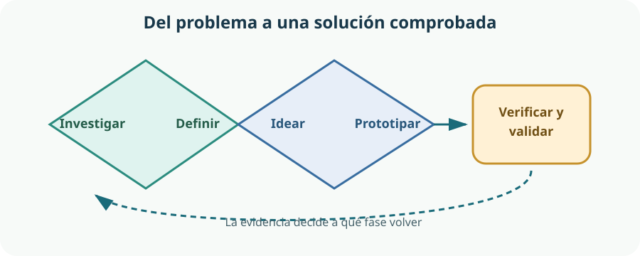

La tecnología comienza antes del dibujo y mucho antes de fabricar: comienza al comprender qué necesita una comunidad. A lo largo del tema seguiremos un mismo hilo, el diseño de un organizador modular accesible para guardar destornilladores, alicates, tornillos, cables y otros componentes del aula-taller. El objeto será nuestro ejemplo, pero el método sirve también para un servicio, una aplicación o un sistema. El currículo de Madrid pide observar el entorno cercano, gestionar el proyecto de forma colaborativa y validar iterativamente soluciones eficientes, accesibles e innovadoras.[1]
- distinguir problema, necesidad, requisito y solución;
- observar y consultar a personas usuarias sin confundir opiniones con pruebas;
- formular requisitos concretos, medibles y relacionados con una necesidad;
- combinar pensamiento divergente y convergente dentro de un proceso no lineal;
- planificar tareas, hitos, dependencias, recursos, riesgos y controles de calidad;
- colaborar mediante roles, acuerdos, registros y decisiones transparentes;
- prototipar, validar con evidencias e iterar sin tratar el error como fracaso;
- incorporar accesibilidad y diseño inclusivo desde el inicio.
1. Del entorno al reto tecnológico
Un proyecto con valor no parte de «quiero construir algo», sino de una situación que merece mejorar. El centro, el barrio o la localidad contienen oportunidades: objetos difíciles de usar, desperdicio de materiales, recorridos inseguros, información confusa o tareas repetitivas. Observarlas con atención permite proponer problemas tecnológicos conectados con la vida real, como establece la competencia específica 1 del currículo.[1]
Cuatro palabras que no significan lo mismo
| Concepto | Qué expresa | Ejemplo | Error frecuente |
|---|---|---|---|
| Problema | Situación observable que produce una dificultad o un efecto no deseado. | Se pierde tiempo buscando piezas y algunas herramientas quedan en lugares inseguros. | Describir ya una solución: «no hay una caja impresa en 3D». |
| Necesidad | Resultado humano o funcional que debe satisfacerse. | Encontrar, alcanzar, identificar y devolver cada elemento con facilidad y seguridad. | Suponer que todas las personas necesitan exactamente lo mismo. |
| Requisito | Condición que la solución deberá cumplir y que puede comprobarse. | Los módulos deben distinguirse sin depender solo del color y no deben volcar durante el uso previsto. | Usar términos vagos como «bonito», «cómodo» o «resistente» sin criterio de prueba. |
| Solución | Propuesta concreta que intenta cumplir los requisitos. | Bandejas modulares inclinadas, con etiquetas en texto y relieve, fijadas a una base estable. | Elegirla antes de investigar y buscar después datos que la justifiquen. |
Enmarcar sin cerrar demasiado pronto
El reto debe ser suficientemente concreto para orientar y suficientemente abierto para admitir varias respuestas. «¿Cómo podríamos facilitar que cualquier persona del grupo localice y devuelva pequeños componentes con rapidez y seguridad?» abre más posibilidades que «¿cómo imprimimos una cajonera azul?». El formato «¿Cómo podríamos…?» se emplea en el diseño centrado en las personas para convertir observaciones en oportunidades sin imponer de antemano una respuesta.[5]
Reto demasiado amplio
«Mejorar el taller». No indica qué experiencia, tarea o grupo se quiere comprender.
Reto demasiado cerrado
«Fabricar doce cajones de 8 cm». La forma y la cantidad aparecen antes de conocer los requisitos.
Reto útil
«Facilitar el almacenamiento y la identificación de herramientas y componentes para personas con distintas capacidades y estaturas».
2. Investigar necesidades sin fabricar certezas
Investigar no consiste en reunir muchas respuestas, sino en obtener información pertinente y reconocer sus límites. Conviene combinar técnicas porque cada una muestra una parte distinta: la observación revela conductas reales; la entrevista aporta motivos y experiencias; las mediciones describen dimensiones o tiempos; y la consulta documental permite contrastar normas, materiales o soluciones existentes.
| Técnica | Pregunta que ayuda a responder | Evidencia posible | Precaución |
|---|---|---|---|
| Observación contextual | ¿Qué ocurre durante una sesión real? | Recorridos, objetos fuera de lugar, bloqueos y tiempos aproximados. | No interpretar una conducta aislada como regla general. |
| Entrevista breve | ¿Qué resulta difícil y por qué? | Relatos y ejemplos en palabras de la persona. | Evitar preguntas que sugieren la respuesta deseada. |
| Medición | ¿Qué tamaños, alcances, pesos o cantidades intervienen? | Dimensiones del espacio, inventario y frecuencia de uso. | Indicar unidades, procedimiento y margen de error. |
| Consulta documental | ¿Qué recomendaciones, normas o antecedentes existen? | Fuentes identificadas, actuales y contrastables. | No copiar una solución de otro contexto sin comprobar su adecuación. |
| Prueba de una tarea | ¿Puede una persona localizar y devolver una pieza? | Éxito, tiempo, errores y comentarios durante el uso. | No convertir una demostración guiada en una falsa validación. |
El diseño centrado en las personas propone aprender directamente de quienes usarán la solución, generar alternativas, crear prototipos y volver a recibir retroalimentación.[5] Esto no significa que «el usuario dicte el objeto»: el equipo interpreta evidencias, restricciones técnicas y posibles conflictos entre necesidades.
Sesgos que pueden deformar la investigación
- Sesgo de confirmación: prestar atención solo a los datos que apoyan la idea favorita.
- Muestra de conveniencia: preguntar únicamente a amistades o a quienes usan el taller del mismo modo.
- Pregunta dirigida: «¿Verdad que sería mejor una cajonera?»; es preferible «¿qué dificulta encontrar una pieza?».
- Efecto de observación: las personas pueden comportarse de otro modo porque saben que están siendo observadas.
- Promedio engañoso: diseñar para una persona «media» y excluir a quienes tienen menor alcance, visión reducida, temblor, lesión temporal o poca experiencia.
Una investigación respetuosa
Hay que explicar el propósito, pedir permiso antes de registrar imágenes o datos personales, recoger solo lo necesario y evitar exponer a nadie. La participación será voluntaria y supervisada, sin recopilar diagnósticos ni señalar públicamente a una persona por su salud o discapacidad. Las personas participantes pueden revisar si hemos entendido bien su experiencia. Para reducir sesgos, conviene combinar pruebas voluntarias, principios de diseño inclusivo y simulaciones del contexto; nunca imitar una discapacidad mediante juegos estereotipados.[9]
3. Convertir necesidades en requisitos y criterios de calidad
Los requisitos traducen lo aprendido en condiciones de diseño. Un requisito útil indica qué debe conseguirse, no necesariamente cómo. «Cada módulo se extraerá con una mano» deja abiertas muchas geometrías; «tendrá un tirador semicircular» obliga prematuramente a una sola forma.
Características de un buen requisito
- Necesario: responde a una evidencia o a una restricción legítima.
- Claro: dos integrantes del equipo lo interpretan de manera parecida.
- Verificable: existe una prueba, medición u observación que permite decidir si se cumple.
- Compatible: no contradice otros requisitos; si hay tensión, se hace explícita.
- Priorizado: se distingue lo imprescindible de lo deseable.
- Trazable: se conoce la necesidad y la evidencia que lo originaron.
| Necesidad | Requisito | Cómo se comprobará | Prioridad |
|---|---|---|---|
| Identificar contenidos | Cada módulo tendrá texto legible y un segundo indicio que no dependa solo del color. | Personas distintas emparejan una pieza con su módulo sin explicación previa. | Imprescindible |
| Uso seguro | No presentará aristas cortantes ni volcará al extraer un módulo en el uso previsto. | Inspección visual y comprobación con un método seguro —paño, galga o útil adecuado—, más una prueba de estabilidad definida por el equipo. | Imprescindible |
| Adaptarse al inventario | Permitirá sustituir o añadir módulos sin rehacer el conjunto. | Montaje y retirada de módulos de tamaños acordados. | Imprescindible |
| Alcance diverso | Los elementos de uso frecuente se situarán en una zona alcanzable por las personas previstas. | Prueba de alcance con participantes de perfiles diferentes. | Imprescindible |
| Aprovechar recursos | Usará materiales y procesos disponibles sin superar el límite acordado de tiempo y coste. | Lista de recursos, estimación y registro real. | Deseable |
| Mantenimiento | Las etiquetas podrán actualizarse y las superficies habituales podrán limpiarse. | Cambio de etiqueta y limpieza de una muestra. | Deseable |
Los requisitos cambian cuando aparece nueva evidencia. Cambiarlos no equivale a improvisar: hay que registrar qué se modifica, por qué, quién lo acuerda y qué tareas quedan afectadas. Así se evita que el proyecto crezca sin control o que una mejora aparente destruya otra característica importante.
4. Design Thinking: alternar comprensión, ideas y pruebas
Design Thinking reúne modos de trabajo para comprender a las personas, definir un reto, idear, prototipar y probar. La d.school de Stanford presenta cinco modos —empatizar, definir, idear, prototipar y probar— y señala que sus herramientas pueden emplearse de manera flexible, no como una receta rígida.[4]
Observar el aula-taller, escuchar experiencias, medir el espacio e identificar a quién afecta la situación.
Sintetizar evidencias, formular la necesidad, reconocer restricciones y redactar un reto abierto.
Generar muchas posibilidades antes de juzgarlas: paneles, carros, bandejas, códigos táctiles, sombras de herramientas o soluciones mixtas.
Representar lo incierto con el menor coste útil: esquema, cartón, cinta, impresión parcial o simulación del uso.
Observar tareas reales, comparar con los requisitos y decidir qué conservar, cambiar o descartar.
No es una escalera de una sola dirección
En un esquema escolar las fases aparecen en fila para poder explicarlas. En un proyecto real se retrocede y se salta entre ellas. Una prueba puede revelar que el reto estaba mal definido; una idea puede exigir investigar un material; un requisito de accesibilidad puede llevar a descartar una forma y generar otras. El modelo del Doble Diamante del Design Council representa dos movimientos de apertura y cierre: explorar ampliamente el problema y concretarlo; explorar muchas respuestas y concretar una.[3]

Pensamiento divergente: abrir
Busca cantidad, variedad y enfoques inesperados. Se aplaza el juicio, se construye sobre ideas ajenas y se evitan las críticas prematuras.
Pensamiento convergente: enfocar
Agrupa, contrasta y selecciona mediante requisitos, evidencias y restricciones. No elige «la idea más popular», sino la más prometedora para probar.
Técnicas sencillas de ideación
- Brainwriting: cada persona escribe o dibuja propuestas antes de compartirlas; puede facilitar que las voces menos rápidas o dominantes aporten ideas.
- Ideas por categorías: generar opciones para almacenar, identificar, fijar, transportar, limpiar y ampliar.
- Combinación: unir rasgos valiosos de dos propuestas sin copiar todos sus inconvenientes.
- Analogías: preguntar cómo resuelven un problema parecido una biblioteca, una cocina, una caja de pesca o un panel de emergencia.
- Idea extrema: imaginar «sin etiquetas», «sin visión», «con una sola mano» o «para cien tipos de piezas» para descubrir principios, no para fabricar literalmente el extremo.
5. Comparar propuestas y tomar una decisión justificable
Seleccionar es una decisión de diseño, no un concurso de dibujos. Antes de puntuar conviene eliminar las propuestas que incumplen una condición imprescindible. Las restantes pueden compararse con una matriz. Los criterios y sus pesos deben acordarse antes de conocer el resultado para no manipularlos a favor de una idea favorita.
| Criterio | Peso orientativo | Panel fijo | Bandejas modulares | Carro móvil |
|---|---|---|---|---|
| Acceso e identificación | Muy alto | Medio | Alto | Alto |
| Estabilidad y seguridad | Muy alto | Alto | Por comprobar | Medio |
| Adaptación a cambios | Alto | Bajo | Alto | Alto |
| Uso de recursos disponibles | Medio | Alto | Alto | Bajo |
| Limpieza y mantenimiento | Medio | Medio | Alto | Medio |
Esta tabla no demuestra que las bandejas sean «la solución correcta». Hace visibles hipótesis y desacuerdos. «Por comprobar» es una respuesta válida y útil: indica qué incertidumbre debe atacar el siguiente prototipo. Si dos propuestas resuelven necesidades distintas, puede aparecer una solución combinada.
Valor para la comunidad y actitud emprendedora
Emprender significa detectar una oportunidad de mejora, movilizar recursos y convertir una idea en valor; no exige crear una empresa ni obtener beneficio económico. En nuestro caso, el valor puede medirse en menos tiempo perdido, mayor autonomía, menos piezas extraviadas y un acceso más equitativo. La iniciativa empuja a actuar, pero debe convivir con la responsabilidad: escuchar objeciones, reconocer límites y abandonar una característica cuando la evidencia lo aconseja.
6. Planificar: del objetivo al trabajo coordinado
Un plan convierte el propósito en acciones coordinadas. Debe ser suficientemente claro para mostrar qué ocurre, quién se responsabiliza y cuándo se revisa, pero también debe poder adaptarse. La metodología PM² de la Comisión Europea organiza la gestión mediante ciclo de vida, funciones, actividades y documentos adaptables al proyecto.[8] En un proyecto escolar basta una versión ligera y visible.
Descomponer sin perder el conjunto
«Hacer el organizador» es demasiado grande para gestionarlo. Se descompone en entregables —por ejemplo, mapa de necesidades, lista de requisitos, conceptos, prototipos y versión validada— y después en tareas breves. Cada tarea necesita una condición de finalización: «entrevistas hechas» es ambiguo; «cuatro entrevistas anonimizadas y sintetizadas en una tabla de hallazgos» es comprobable.
| Elemento | Pregunta | Ejemplo en el proyecto |
|---|---|---|
| Tarea | ¿Qué acción concreta hay que completar? | Medir la mesa y el alcance disponible. |
| Entregable | ¿Qué resultado revisable produce el trabajo? | Plano de zona disponible con cotas y obstáculos. |
| Hito | ¿Qué punto importante permite decidir o pasar de fase? | Requisitos iniciales aceptados antes de comparar conceptos. |
| Dependencia | ¿Qué debe ocurrir antes de comenzar otra tarea? | No dimensionar módulos definitivos antes de inventariar componentes. |
| Recurso | ¿Qué persona, tiempo, material, herramienta o información hace falta? | Cartón precortado, tijeras escolares cuando proceda, regla y franja de una sesión. |
| Riesgo | ¿Qué suceso incierto podría afectar al proyecto? | Que la unión modular no soporte el uso repetido. |
| Control de calidad | ¿Cómo sabremos que el resultado parcial sirve? | Revisión de requisitos, cotas y legibilidad antes de fabricar más unidades. |
Hitos y dependencias
Un hito no es una tarea larga, sino un punto de control: «reto definido», «concepto seleccionado» o «prototipo preparado para prueba». Las dependencias explican el orden lógico. Algunas tareas pueden realizarse en paralelo —medir el espacio e inventariar componentes—; otras deben esperar —elegir dimensiones depende de ambos resultados—. Visualizarlas evita que una persona quede parada o que se fabrique algo basado en datos aún no confirmados.
Riesgo no es problema
Un riesgo todavía no ha ocurrido; un problema o incidencia ya está afectando al proyecto. Cada riesgo relevante se describe mediante causa, suceso y efecto, se estima por probabilidad e impacto y recibe una respuesta. Por ejemplo: «Si las etiquetas adhesivas se despegan con la limpieza, la identificación fallará; probaremos dos sistemas en una muestra antes de producir todas». Gestionar riesgos pronto cuesta menos que corregir tarde.
| Riesgo | Probabilidad | Impacto | Respuesta | Señal de revisión |
|---|---|---|---|---|
| La base vuelca al abrir una bandeja cargada. | Media | Alto | Prototipar la base y probar el caso de carga desfavorable. | Movimiento o levantamiento de un apoyo. |
| Falta el material previsto. | Media | Medio | Comprobar existencias y definir una alternativa compatible. | Inventario inferior al necesario. |
| Las etiquetas se confunden con poca luz. | Media | Alto | Ensayar contraste, tamaño, icono y relieve con usuarios. | Errores repetidos de identificación. |
| Una tarea crítica depende de una sola persona. | Alta | Medio | Compartir archivos, documentar y trabajar por parejas en esa tarea. | Nadie puede continuar en su ausencia. |
7. Equipo: roles, acuerdos y responsabilidad compartida
Colaborar no es dividir el objeto en cuatro partes y unirlas al final. El equipo comparte objetivos, evidencias y decisiones; coordina dependencias; revisa el trabajo y ayuda a desbloquear tareas. Un rol asigna una responsabilidad temporal, no una jerarquía personal ni una etiqueta sobre quién «es creativo» o «es hábil».
| Rol | Responsabilidad principal | No significa |
|---|---|---|
| Coordinación | Hace visible el objetivo, facilita decisiones y revisa bloqueos y dependencias. | Mandar ni decidir en solitario. |
| Investigación y accesibilidad | Cuida la calidad de la evidencia y que participen perfiles diversos. | Ser la única persona que piensa en usuarios. |
| Diseño y prototipado | Traduce hipótesis en representaciones y versiones comprobables. | Ser propietario de la idea o trabajar sin revisión. |
| Planificación y recursos | Actualiza tareas, tiempos, materiales, costes y riesgos. | Hacer toda la documentación administrativa. |
| Calidad y validación | Prepara pruebas, registra resultados y comprueba trazabilidad. | Buscar culpables cuando algo falla. |
| Comunicación | Sintetiza decisiones, versiones y resultados para el equipo y otras personas. | Ser la única voz pública del grupo. |
En equipos pequeños una persona puede asumir dos roles, y los roles pueden rotar entre iteraciones para repartir aprendizaje y evitar dependencias. Las tareas, en cambio, deben tener una persona responsable clara, aunque varias colaboren. «Lo hacemos entre todos» suele significar que nadie sabe quién comprobará que termina.
Acuerdos de trabajo que previenen conflictos
- Canales: dónde se guardan archivos, decisiones y avisos; cuál es la versión vigente.
- Ritmo: cuándo se revisa el tablero y cuánto puede permanecer bloqueada una tarea antes de pedir ayuda.
- Decisiones: qué se decide por consenso, qué puede decidir un rol y cómo se registra un desacuerdo.
- Participación: turnos de palabra, tiempo para pensar y obligación de criticar propuestas sin atacar a personas.
- Calidad: ninguna tarea pasa a «terminada» sin cumplir su criterio de finalización y recibir la revisión acordada.
- Seguridad y cuidado: normas del taller, uso responsable de materiales y respuesta ante una situación insegura.
Perseverar con criterio
La perseverancia no consiste en repetir exactamente lo mismo pese a la evidencia. Consiste en mantener el propósito mientras se cambia de estrategia: reducir el alcance, ensayar otro material, pedir ayuda, volver a investigar o descartar una idea costosa. Un equipo emprendedor aprende del error sin ocultarlo y conserva un registro de qué intentó y qué descubrió.
8. Prototipar, validar, iterar e incluir
Un prototipo es una representación construida para aprender. No tiene que parecer el producto final: debe responder a una pregunta. Para comprobar la altura de acceso basta una silueta de cartón; para estudiar la legibilidad sirven etiquetas impresas; para ensayar una unión hace falta una muestra funcional. Prototipar todo con el máximo acabado demasiado pronto hace costoso cambiar y puede provocar apego a la primera versión.
| Pregunta | Prototipo adecuado | Dato que interesa |
|---|---|---|
| ¿Se entiende la organización? | Esquema a escala o tarjetas que simulan módulos. | Cómo agrupan y buscan las personas. |
| ¿Se alcanzan los elementos frecuentes? | Volumen de cartón colocado en el lugar previsto. | Alcance, postura y obstáculos. |
| ¿Se distingue cada contenido? | Variantes de etiqueta con texto, icono, contraste y relieve. | Errores, tiempo y preferencias explicadas. |
| ¿Resiste la unión modular? | Una sola unión con material y carga representativos. | Holgura, deformación y ciclos de uso. |
| ¿El conjunto es estable? | Base funcional con la situación de carga más desfavorable prevista. | Deslizamiento, vuelco y esfuerzo de extracción. |
Contrastar y validar, no defender un objeto
Contrastar una hipótesis permite aceptar, revisar o rechazar una predicción concreta; verificar comprueba si el prototipo cumple requisitos especificados; y validar comprueba si la solución responde a la necesidad y al contexto de uso. No basta preguntar «¿te gusta?». Una prueba debe indicar participantes, contexto, tarea, medida de éxito y forma de registro.
- Hipótesis: las etiquetas multimodales permiten identificar módulos sin depender del color.
- Prueba: localizar y devolver componentes bajo condiciones de uso realistas.
- Evidencia: resultados observados y comentarios literales, no solo impresiones del equipo.
- Decisión: conservar, modificar, combinar o descartar; actualizar requisitos y plan.
- Nueva iteración: probar el cambio sobre la incertidumbre más importante que quede.
Accesibilidad y diseño inclusivo desde el comienzo
La accesibilidad busca que productos, entornos y servicios puedan ser percibidos, comprendidos y utilizados por personas con capacidades diversas. W3C/WAI explica que es esencial para algunas personas y beneficiosa para muchas otras, y que las barreras aparecen cuando el diseño no considera la diversidad.[6] Aunque sus recursos se centran en la web, principios como ofrecer alternativas, permitir distintas formas de interacción y asegurar comprensión son transferibles al diseño de nuestro organizador.[7]
| Barrera | Decisión inclusiva | A quién puede beneficiar | Cómo validarla |
|---|---|---|---|
| El color es la única pista. | Combinar texto, alto contraste, icono o forma táctil coherente. | Personas con baja visión, alteraciones en percepción del color o poca experiencia. | Prueba sin color o con iluminación desfavorable. |
| Tiradores pequeños o duros. | Zona de agarre amplia, esfuerzo moderado y espacio para los dedos. | Personas con menor destreza, guantes, lesión temporal o manos grandes. | Observación con una sola mano y distintos agarres. |
| Elementos frecuentes demasiado altos o bajos. | Ordenar por frecuencia y comprobar rangos de alcance. | Personas de distinta estatura, movilidad o posición de trabajo. | Prueba en el emplazamiento real con perfiles diversos. |
| Clasificación difícil de comprender. | Grupos consistentes, vocabulario familiar y ejemplo visual o físico. | Quien se incorpora al taller, tiene dificultad lectora o usa otra lengua. | Tarea sin instrucciones adicionales. |
| Montaje que exige demasiada fuerza. | Uniones guiadas, tolerancias adecuadas y pasos reversibles. | Todo el grupo, especialmente personas con fuerza limitada. | Medición y observación de esfuerzo y errores. |
Diseñar de forma inclusiva no consiste en imaginar «usuarios especiales» al final ni en añadir una adaptación aislada. Consiste en incorporar diversidad real a investigación, requisitos, ideación y pruebas. Una rampa improvisada al terminar un edificio ilustra el coste del añadido tardío; en cambio, una entrada sin escalón puede servir a una silla de ruedas, un carro, una lesión temporal y el transporte de materiales. En el organizador, una etiqueta redundante y un agarre claro mejoran el uso para casi todo el grupo.
Cerrar una iteración con calidad
Antes de considerar válida una versión, el equipo revisa: cumplimiento de requisitos imprescindibles; seguridad; accesibilidad; estabilidad; uso de recursos; posibilidad de mantenimiento; evidencia de las pruebas; y cambios pendientes. La estética importa porque puede facilitar comprensión y cuidado, pero se evalúa junto con la función, no en su lugar.
Criterios de evaluación 1.1, 1.2 y 1.3
Este tema prepara tres desempeños del currículo de Tecnología de 4.º de la ESO de la Comunidad de Madrid.[1] La tabla traduce cada criterio a evidencias observables sin sustituir su formulación oficial.
| Criterio | Núcleo del desempeño | Evidencias posibles |
|---|---|---|
| 1.1 | Idear y planificar soluciones emprendedoras con valor para la comunidad a partir del entorno, sus necesidades, requisitos y oportunidades de mejora. | Mapa de evidencias, necesidad bien formulada, requisitos trazables, propuesta de valor y plan coherente. |
| 1.2 | Aplicar estrategias colaborativas como Design Thinking, con perspectiva interdisciplinar y validación iterativa desde la idea hasta la difusión. | Alternativas diversas, criterios de selección, prototipos sucesivos, pruebas con usuarios, registro de cambios y coordinación del equipo. |
| 1.3 | Gestionar creativamente el proyecto mediante técnicas colaborativas e investigación para lograr soluciones eficientes, accesibles e innovadoras. | Métodos de investigación justificados, participación diversa, decisiones de accesibilidad, gestión de riesgos, uso responsable de recursos y controles de calidad. |
El marco estatal de la ESO sitúa estas competencias dentro de una formación orientada a aplicar saberes en situaciones y a afrontar retos de manera responsable.[2] Por eso no basta con presentar un objeto acabado: importan la comprensión de la necesidad, la calidad del proceso, la colaboración y las evidencias que justifican cada mejora.
Glosario del tema
- Accesibilidad
- Condición que permite percibir, comprender y utilizar un producto, entorno o servicio a personas con capacidades diversas.
- Dependencia
- Relación por la que una tarea o entregable necesita que otro trabajo o recurso esté disponible.
- Diseño inclusivo
- Enfoque que incorpora la diversidad de las personas durante todo el proceso y evita crear barreras.
- Entregable
- Resultado concreto y revisable producido por una tarea o fase.
- Hito
- Punto relevante del proyecto usado para revisar, decidir o autorizar el paso siguiente.
- Hipótesis
- Explicación o predicción provisional que puede contrastarse mediante evidencia.
- Iteración
- Ciclo de trabajo que usa lo aprendido para modificar una propuesta, requisito o plan.
- Necesidad
- Resultado humano o funcional que conviene satisfacer, identificado a partir del contexto.
- Problema
- Situación observable que causa una dificultad, riesgo o resultado no deseado.
- Prototipo
- Representación parcial o completa construida para responder preguntas y reducir incertidumbre.
- Requisito
- Condición clara y verificable que una solución debe cumplir.
- Riesgo
- Suceso incierto que, si ocurre, puede afectar a los objetivos del proyecto.
- Sesgo
- Tendencia sistemática que puede distorsionar la recogida, interpretación o selección de información.
- Solución
- Respuesta concreta diseñada para satisfacer necesidades y requisitos dentro de unas restricciones.
- Trazabilidad
- Capacidad de relacionar una decisión o característica con su requisito, necesidad y evidencia de origen.
- Validación
- Obtención y análisis de evidencia para decidir si una hipótesis o solución responde a la necesidad prevista.
Resumen esencial
- Un problema describe una dificultad; una necesidad, el resultado buscado; un requisito, una condición comprobable; y una solución, una respuesta concreta.
- Investigar exige combinar observación, entrevistas, mediciones y fuentes, separar datos de interpretaciones y reducir sesgos.
- Los requisitos deben ser claros, necesarios, verificables, compatibles, priorizados y trazables.
- Design Thinking no es una receta lineal: comprender, definir, idear, prototipar y probar se alternan según lo aprendido.
- El pensamiento divergente genera variedad; el convergente selecciona mediante evidencias, requisitos y restricciones.
- Un plan visible conecta tareas, entregables, responsables, hitos, dependencias, recursos, riesgos y controles de calidad.
- Los roles reparten responsabilidades y deben facilitar participación, revisión y aprendizaje compartido, no crear jerarquías fijas.
- Un prototipo sirve para aprender; una validación contrasta hipótesis; una iteración convierte la evidencia en cambios.
- Accesibilidad, seguridad, sostenibilidad de recursos y mantenimiento se consideran desde el inicio, no como añadidos finales.
- Emprendimiento, creatividad y perseverancia producen valor cuando se apoyan en responsabilidad, evidencia y calidad.
Fuentes y recursos fiables
- [1] Comunidad de Madrid — Decreto 65/2022, de 20 de julio, currículo de Educación Secundaria Obligatoria (PDF). Véanse el Anexo II, la materia Tecnología, la competencia específica 1, los criterios 1.1–1.3 y el bloque A.
- [2] BOE — Real Decreto 217/2022, de 29 de marzo, ordenación y enseñanzas mínimas de la ESO.
- [3] Design Council — The Double Diamond (en inglés).
- [4] Stanford d.school — Design Thinking Bootleg (en inglés).
- [5] IDEO.org — Design Kit: métodos de diseño centrado en las personas (en inglés).
- [6] W3C Web Accessibility Initiative — Introduction to Web Accessibility (en inglés).
- [7] W3C Web Accessibility Initiative — Accessibility Principles (en inglés).
- [8] Comisión Europea — PM² Project Management Methodology (en inglés).
- [9] Agencia Española de Protección de Datos — Guía para centros educativos (PDF).